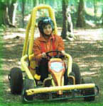
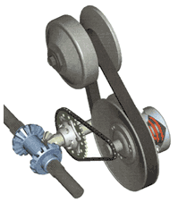
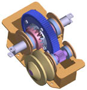
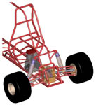
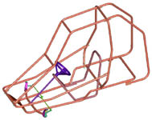
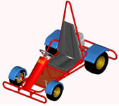
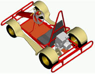

|
Agromak
A.Þ. ve Sakarya Üniversitesi Makine Müh. Bölümü CAD/CAM/CAE
Merkezi Hobimak markalý go-kart taþýtlarýn geliþtirilmesi
için ortak çalýþma içindedirler. Araçýn taþýyýcý boru þasesinin
yapýsal bütünlüðü "sonlu elemanlar methodu" statik,
yol ve herhangi bir kaza dinamik yükleri için irdelenmiþtir.
Ürünlerin kalite güvencesi parçalarýn TSE ve DIN standartlarýna
uygunluðuyla saðlanmýþtýr. Ürünlerin TSE kalite damgasýna
haiz olabilmesi için öncelikle TSE için bu sektörde mevcut
olmayan normlar Sakarya Üniv. ile beraberce gerçekleþtirilmiþtir.
Sakarya Üniversitesi'nin CAD/CAM/CAE Merkezi en ergonomik
ve optimal tasarýmý gerçekleþtirme çalýþmalarýný sürdürmektedir.
Ürün özellikleri ve kullanýcý emniyeti ideal tasarým içinde
birleþtirilmekte ve deðerlendirilmektedir.
Çalýþmanýn
detaylarý:
Sakarya
Üniversitesi ve Agromak A.Þ. ile ortak yürütülen çalýþmanýn
amacý mevcut Go-Kart araçlarýnýn iyileþtirme ve geliþtirmesini
kapsamaktadýr.
Ortak çalýþmanýn ilk adýmý üretilen araçlarda bulunan mevcut
problemlerin (yürüyen aksam ve þasi) çözümlenmesidir.
Ýkinci adým ise daha büyük ve özel tasarým olan ayrýca ileri
ve geri hareket kabiliyeti saðlayan þanzýmanlý modellerin
tasarlanmasýdýr.
Ýlk adým çerçevesinde mevcut modeller Sakarya Üniv. CAD/CAM/CAE
Merkezi'nde test edilip dönme esnasýnda aracýn düz gitmesi
ve dönme eðilimi gösteremediði saptanmýþtýr. Bunun için çözüm
olarak gerekli kamber ve kaster açý ayarlarý yapýlmýþ ve bu
ayarlama sonucunda dönme esnasýnda aracýn problemleri çözüme
kavuþturulmuþtur. Bu çalýþma off-road tipi araçlar için gerçekleþtirilmiþtir.
Bunun yanýnda pist tipi denilen araçlar için de yeni bir þasi
tasarýmý yapýlmýþ ve bu tasarým ile üretime geçilmiþtir.
Ýkinci
adýmda ise iki kiþi taþýyabilen ve 10-20 BG arasýnda deðiþen
motorlar ile çalýþan özel yapým büyük tipte Off-Road tipi
Go-Kart araçlarý için bir çalýþma yapýlmýþtýr. Bu çalýþma
þasi tasarýmýndan çok Sakarya Üniv. CAD/CAM/CAE Merkezi tarafýndan
geliþtirilen bir ileri-geri þanzýman tasarýmý þeklinde olmuþtur.
(Þanzýman modeli saðdaki resimde görülmektedir)
Bu çalýþmalarýn yanýnda araçlarýn estetik görünümlerini artýrmak
için çamurluk v.s tasarýmý gibi deðiþik çalýþmalar da yapýlmýþtýr.
Yapýlan çalýþmalar sonucunda üniversite ve sanayi iþbirliði
sonucunda firmanýn mevcut problemleri giderilmiþ ve yeni tasarlanan
modellerin imalatýna geçilmiþtir.
Bu çalýþmalarda CAD/CAM/CAE yazýlýmý olarak Pro/ENGINEER kullanýlmýþtýr.
Çalýþmalardan
derlenen bazý resimler:



Sol
baþta, Çöl Tilkisi adý verilen fakat henüz üretimi yapýlmayan
tasarým, yanýndaki resimde ise bir þasi tasarýmý görülmektedir.
Saðdaki iki resim ise çamurluk tasarým çalýþmalarýna aittir.
Not: Resimleri daha büyük görmek için üzerlerini klikleyiniz.
Agromak
A.Þ. Hakkýnda:
Agromak A.Þ. 1999'dan beri Türkiye'de yaptýðý giriþimlerle
daha önce pazara sunulmamýþ ve/veya üretilmemiþ farklý ürünler
üzerinde çalýþmaktadýr; Sera ve bahçeler için profesyonel
veya hobby amaçlý tarým aletlerinin imalat ve pazarlamasýndan,
Hobimak markalý eðlence amaçlý go-kart araçlarýnýn tasarým
ve imalatýna kadar geniþ faaliyet yelpazesi bulunan Hobimak
A.Þ., talep çerçevesinde müþterileri için özel amaçlý ürünler
ve farklý özelliklere sahip araçlar da üretmektedir. AR&GE
için batý standartlarýnýn üzerinde kaynak ve zaman ayýran
Agromak, yabancý teknolojileri kullanmadan kendi öz kaynaklarý
ile daha kaliteliyi gerçekleþtirmek için gayret göstermektedir...
Daha
fazla bilgi için:
www.agromak.com.tr
> Agromak A.Þ.
www.agromak.com.tr/tragromak_rd.asp
> Agromak A.Þ. / Ar-Ge
www.agromak.com.tr/basinda_agromak.asp
> Basýnda Agromak A.Þ.
www.cadcam.sakarya.edu.tr
> Sakarya Üniversitesi CAD/CAM/CAE Merkezi
www.cadcam.sakarya.edu.tr/calisma/go.html
> Çalýþmalar > Go - Kart tasarýmý
|